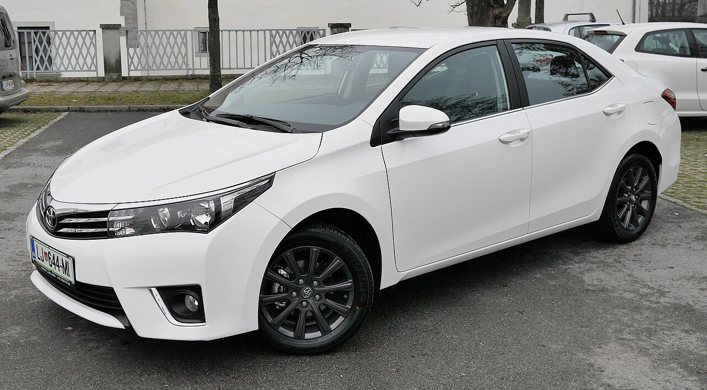
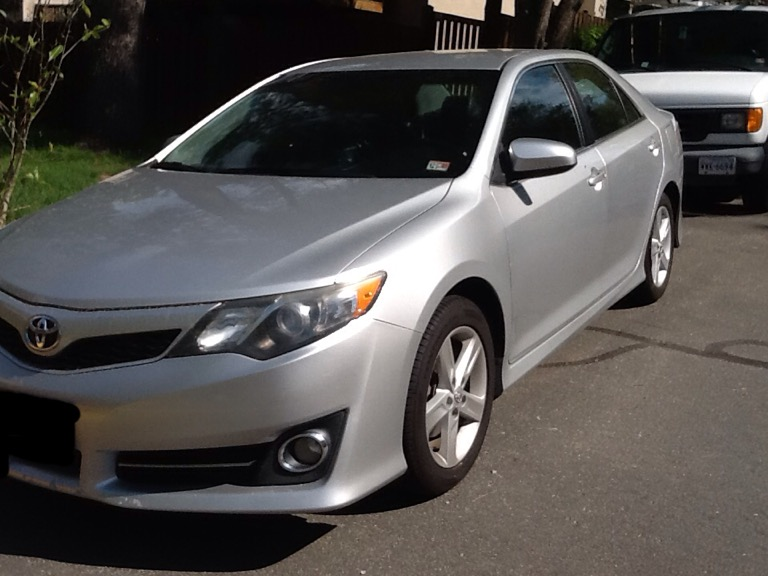
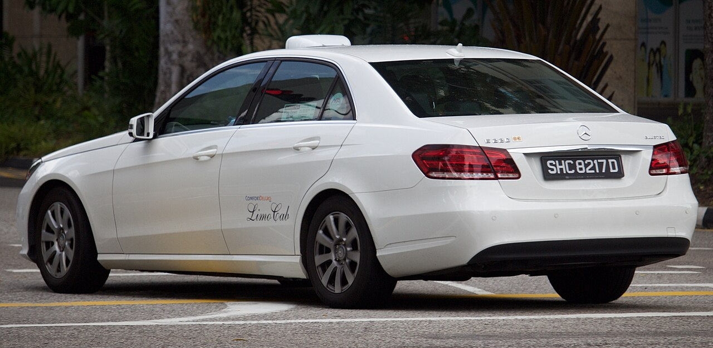
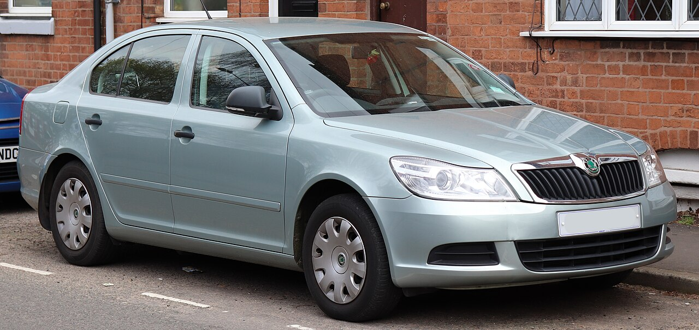
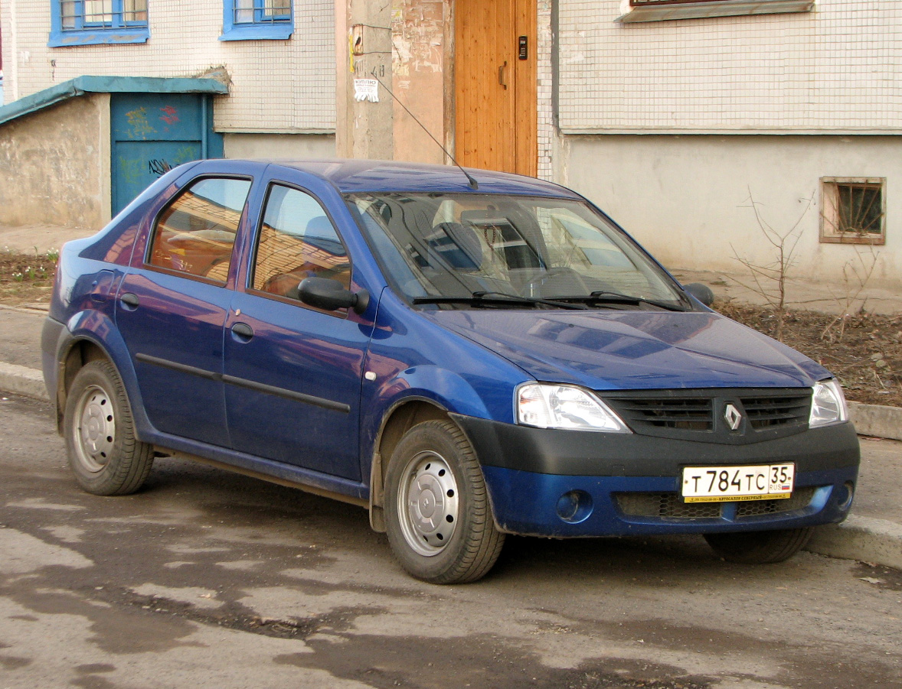
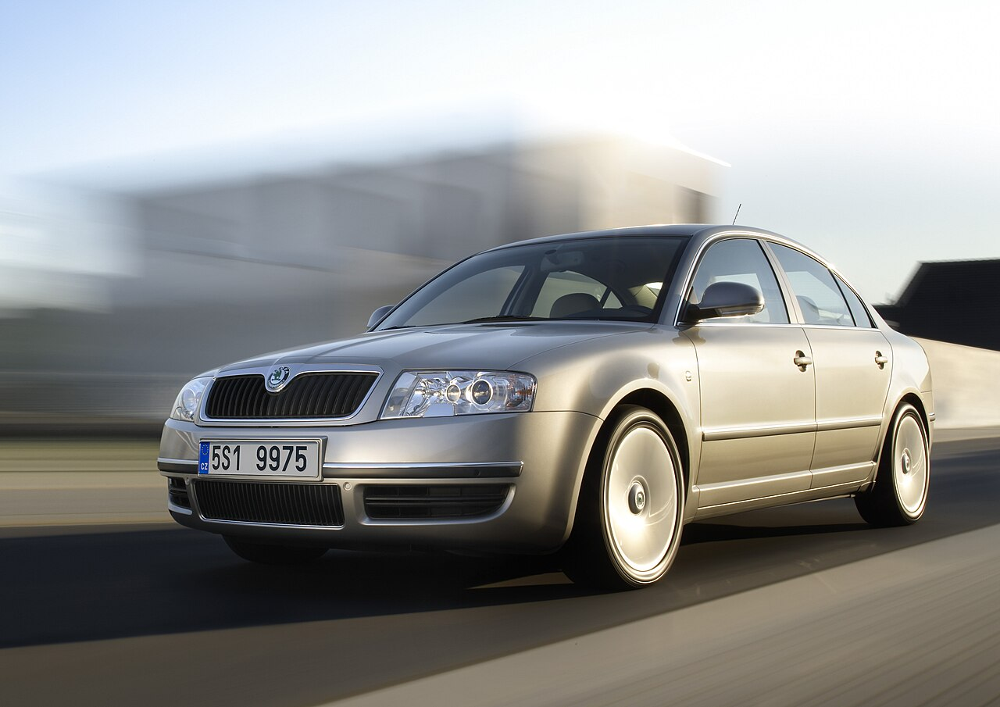
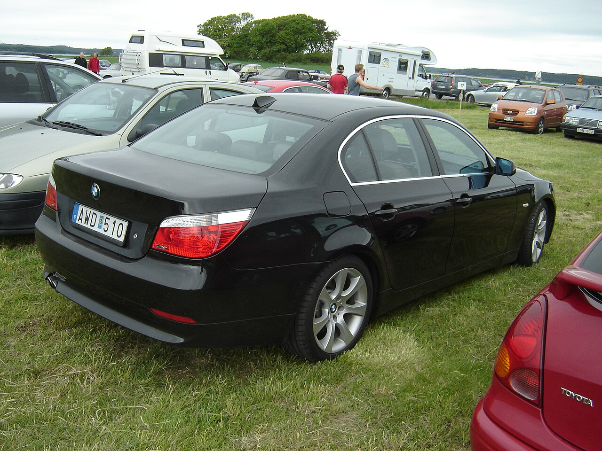

Обери напрямок
Вкажи, звідки й куди.
Поїздки, які підлаштовуються під тебе. Обирай маршрут і рушай легко.
Замовити поїздку ↗Вкажи адресу старту, пункт призначення та проміжні зупинки. Обери райони, щоб швидше зорієнтуватися, і подивись розрахунок вартості до підтвердження.
Побудувати маршрут ↗Вкажи, звідки й куди.
Стандарт, комфорт чи бізнес.
Вартість відома до старту.
Переглянь приклади моделей і обери клас авто для своєї поїздки. Наявність машин у місті може відрізнятися.

Зручний вибір для щоденних справ і коротких поїздок містом.
Базовий тариф
Просторий салон і додатковий затишок, коли хочеться їхати спокійно.
Тариф × 1,35
Стриманий стиль і поїздка для важливої зустрічі чи особливої нагоди.
Тариф × 1,85
Універсальний кузов для міських поїздок і щоденних справ.
Базовий тариф
Практичний седан для коротких маршрутів і поїздок містом.
Базовий тариф
Просторий салон для довших поїздок і комфортної дороги.
Тариф × 1,35
Седан бізнес-класу для ділових зустрічей і особливих нагод.
Тариф × 1,85Додай домашню та робочу адресу в профілі. Підставляй збережене місце в поле старту одним натисканням.
Додай проміжні адреси, якщо треба заїхати дорогою. Змінюй порядок і видаляй непотрібні зупинки.
Знайди своє місто, область, район або район міста у профілі. Введи назву вручну, якщо її немає в підказках.
Збережи номер телефону, вподобаний клас авто, спосіб оплати та переглядай історію розрахованих поїздок.
Вартість на сайті є попереднім розрахунком для демонстрації сервісу. Онлайн-замовлення водія, оплата та відстеження авто тут поки не підключені.
Плануй поїздку з потрібними адресами, містами й класом авто.
Ми готуємо окремий простір для водіїв і керування поїздками.
Реєстрація водіїв і прийом замовлень ще не підключені у демо-версії.